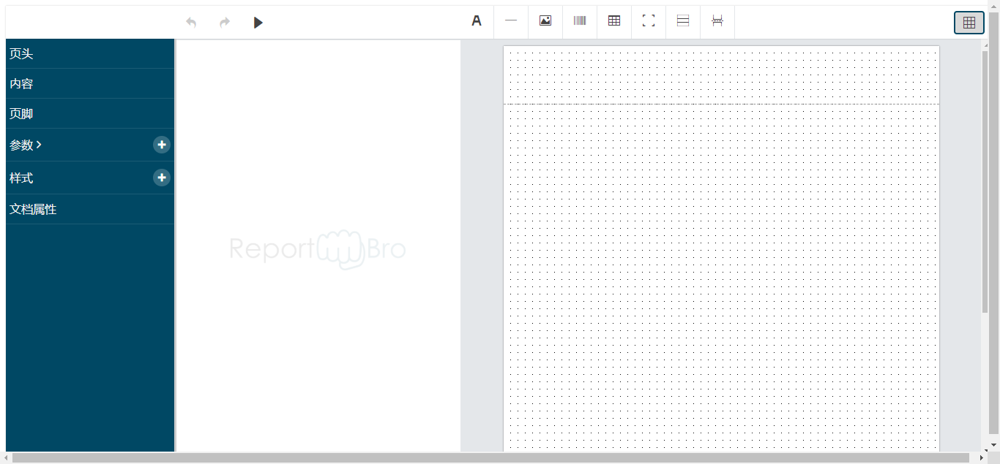

这两天需要做一个可以高度自定义的报表，项目不紧迫，但是考虑到完善性方面，决定使用 reportBro 插件，高度自由，没有框框架架的约束。
一方面记录这个插件，一方面记录在 react 中使用 Jquery 插件。
关于 reportBro 在浏览器中设计报告，轻松生成PDF和Excel文件。
废话不多说，直接上官网 最简demo。
1 2 3 4 5 6 7 8 9 10 11 12 13 14 15 16 17 18 19 <html > <header > <link rel ="stylesheet" href ="https://cdnjs.cloudflare.com/ajax/libs/spectrum/1.8.0/spectrum.min.css" /> <link rel ="stylesheet" href ="dist/reportbro.css" /> <script src ="https://cdnjs.cloudflare.com/ajax/libs/jquery/3.1.1/jquery.min.js" > </script > <script src ="https://cdnjs.cloudflare.com/ajax/libs/spectrum/1.8.0/spectrum.min.js" > </script > <script src ="https://cdnjs.cloudflare.com/ajax/libs/autosize.js/3.0.20/autosize.min.js" > </script > <script src ="https://cdnjs.cloudflare.com/ajax/libs/jsbarcode/3.8.0/JsBarcode.all.min.js" > </script > <script src ="dist/reportbro.js" > </script > </header > <body > <div id ="reportbro" > </div > </body > <script type ="text/javascript" > $(document ).ready(function ( $("#reportbro" ).reportBro({}); }); </script > </html >
当然，里面 dist 文件夹的内容是使用源码 打包成的。
还有一个服务端的用于生成 PDF 的源码，源码地址 ，这个服务端已经超出了我的能力范围了，所以先不讨论服务端，我们就只讨论前端展示以及数据存储。
来啦，大家期待的图片

有没有觉得很奇怪的地方，有就对了，这里我可是翻译过来的哈，原版是没有翻译的哦。
这里的很多东西都是可以配置的，在 $("#reportbro").reportBro({/* 是这里哦 */}) 中传入一个配置对象，没错，就像大多数的插件一样。
接下来让我看看有什么配置项叭，如果想要直接看官方文档的也可以直接看官方文档（翻译一下就是中文了哈哈哈哈）。
1 2 3 4 5 6 7 8 9 10 11 12 13 14 15 16 17 18 19 20 21 22 23 24 25 26 27 28 29 30 31 32 33 34 35 36 37 38 39 40 41 $(document ).ready(function ( const rb = $("#reportbro" ).reportBro({ adminMode: true , fonts:[ { name : 'Courier' , value : 'courier' }, { name : 'Helvetica' , value : 'helvetica' }, { name : 'Times New Roman' , value : 'times' } ], additionalFonts:[], cmdExecutedCallback: null , enableSpreadsheet: true , localStorageReportKey: null , locale: { }, localeKey: "en_us" , menuShowButtonLabels: false , menuShowDebug: false , menuSidebar: false , patternCurrencySymbol: '$' , patternLocale: 'en' , patternDates: [ { name : 'd.M.yyyy' , description : 'patternDate1' }, { name : 'd.M.yy, H:mm' , description : 'patternDate2' }, { name : 'd/MMM/yyyy' , description : 'patternDate3' }, { name : 'MM/dd/yyyy' , description : 'patternDate4' } ], patternNumbers: [ { name : '#,##0' , description : 'patternNumber1' }, { name : '0.000' , description : 'patternNumber2' }, { name : '0.00##' , description : 'patternNumber3' }, { name : '#,##0.00' , description : 'patternNumber4' }, { name : '$ #,##0.00' , description : 'patternNumber5' } ], patternAdditionalDates: [], patternAdditionalNumbers: [], reportServerTimeout: '20000' , reportServerUrl: "https://www.reportbro.com/report/run" , saveCallback: null , showGrid: true , }); });
对于上面 ？ 部分我也不是很懂具体怎么用，等我需要的时候再接着看呗（不存在的）。
说回正经的，上面最迷惑的莫过于 saveCallback，这个也是我们必须要用到的，可是我们在哪里触发保存呢，一开始我也找过文档，在 API 中有提过 save 方法，然后它又把问题抛了回来，之后尝试在配置中添加 saveCallback（值不为 null） 之后，在操作栏上就出现了保存的按钮。艹（中日双语）。
API 现在我们来聊一下关于那些令人着迷的 API 叭。
其实这个东西我不是很想写，毕竟我们常用到的预览、保存、撤销、重做都是操作栏写好了的。而其他的那些我们又用不到。
好吧，在二次开发中有些不常用的确是用得到。
这里我就写两个
getReport()
返回一个包含着这个 report 的对象。
previewWithData(data)
与 preview() 相同，但是这个使用的是实际数据而非测试数据（parameters 填写时可以添加）。
使用方法如下：
1 2 3 rb.previewWithData({ money: 10000 })
随便找个按钮执行就完了，rb 指的是初始化之后的对象，data 必须为一个对象，对象中的属性需要根据 parameters 做出相对应的修改。
比如我们在 parameters 中定义一个 money 参数（测试数据为 10），并将他添加到 content 中，点击按钮之后看到的值就是 10000 而不是测试的 10。
大概其他方法也是同样的，所以就告辞，(●'◡'●)。
关于 parameters 上面说到 previewWithData(data) 这个功能，这里就必须要来讲一讲与 data 有关的 parameters 的属性问题。
我们在添加 parameters 时，允许我们给参数添加类型，其中包括文本、数字、布尔值、日期、图片、列表、简单列表、集合、总和、平均值。
假设我们现有有这么一个报表，它包含了各种参数 text, number, boolean, date, image, list, simpleList, collection, sum, average。
我们需要传入的 data 要与之相应类型才行，且 data 必须是对象。
1 2 3 4 5 6 7 8 9 10 11 12 13 14 15 16 17 18 19 20 21 22 23 const data = { text: 'asdfgh' , number: 123456 , boolean: true , date: new Date (), image: ???, list: [], simpleList: [], collection: {}, sum: ???, average: ??? }: { text: String , number: Number , boolean: Boolean , date: Date image: ???, list: Array , simpleList: Array , collection: Object , sum: ???, average: ??? }
reportbro 是这样返回 list 的：
1 2 3 4 5 6 7 8 9 10 11 12 13 14 15 16 17 18 19 20 21 22 23 24 25 26 27 28 29 30 31 32 33 34 Object { docElements: [], styles: [], version: 3 , parameters: [ { arrayItemType: String 'string' , name: String 'list' , chileren: Array [ { arrayItemType: String 'string' , eval : Boolean false , expression: String '' , id: Number 2 , name: String 'row_number' nullable: Boolean false , pattern: String '' , showOnlyNameType: Boolean true , testData: String '' , type: String 'number' }, ], eval : Boolean false , expression: String '' , id: Number 1 , nullable: Boolean false , pattern: String '' , showOnlyNameType: Boolean false , testData: String '' , type: String "array" , } ] }
其实这个 list 就是我们表格的数据，它里面的每一行就是一个 children 数据。
怎么说呢，要搞出一个适合 array 的内容真的有点难，情况有点多。
关于中文的支持 在官方示例 中有个字体是允许使用中文的，我也不知道为什么我的这个不会提示我输入中文格式不对，反正官方的是会的。
官方的中文字体库为 fireflysung。如果需要使用到则需要配置 additionalFonts:[{name:'firefly', value: 'firefly'}]，其中 name 是展示供以选择的，而 value 对应的是字体的 ttf 文件以及后台的中文语言包，必须做到前后一致。
注意事项
原插件不允许添加中文。需要后台配合修改。
配置对象不传的话会报错的，所以至少要传一个空对象。
在 $('#reportbro').reportBro('load', report) 中 report 有个硬性要求，它不能为 null，并且需要含有三个属性，{styles: [], version: 3, parameters: [], docElements: [],} 其中 version 默认为 3，所以可以不用。另外三个属性在程序中需要遍历，所以必须是个数组。
在 react 项目中，不知道是我的 state 问题还是什么问题，通过下拉选择的都会 push 进一个数组，导致传到服务器无法解析，或者还没传到服务器就报错，类型不对的错误。
关于一个莫名其妙的问题 parameterType 的值为一个只有一个元素的数组，造成原因不明。
处理方法：三元判断 parameterType 的值，如果是数组，值为数组的第一个元素，如果值不是数组，值就是值。
In React 在 react 中我们要怎么使用 reportBro 呢？这个算不算世纪难题啊，毕竟在那个被 jQuery 统治的时代，许多先人都是通过 jQuery 书写插件。
我们使用 JQ 需要在页面中引入，所以需要在入口文件中添加 JQ 的引入。如果插件需要其他的js，而又没有模块可以导入，我们都需要在入口文件中把它们引入。（不知道是不是入口文件这个名字，暂定，反正就是一个html）
以 reportBro 为例
1 2 3 4 5 6 7 8 9 10 11 class ReportBro extends Component componentDidMount() { } render() { return ( <> <div id="reportbro" ></div> </ > ); } }
这个是项目中用到 reportBro 的地方，将不需要的略去。
为什么还有个 componentDidMount(){}
别问，问就是等下有用。
因为 jq 的特性，我们需要在页面加载完之后执行那个 $ 符号。
1 2 3 4 5 6 componentDidMount() { $(document ).ready(() => $('#reportbro' ).reportBro({}); $('#reportbro' ).reportBro('load' , report); }) }
好的，就先到这里吧。
告辞(●'◡'●)。